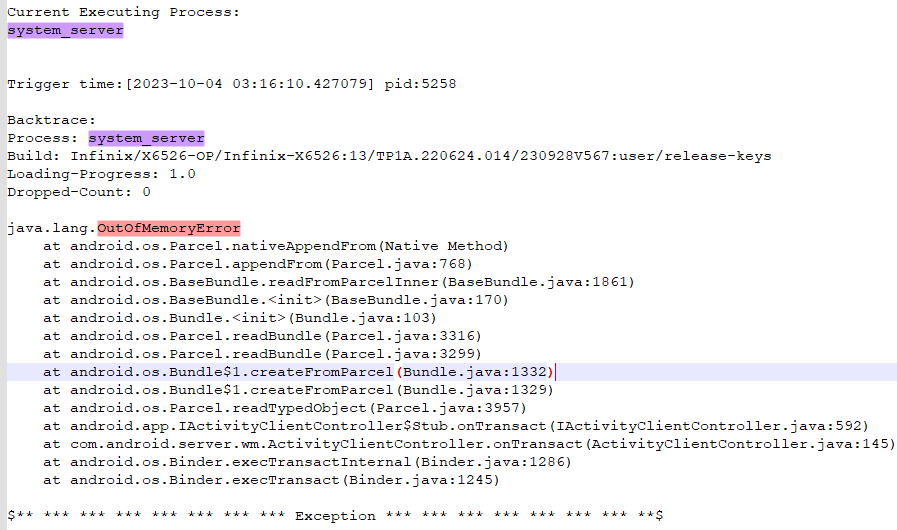

Bitmap泄漏问题总结
http://jira-ex.transsion.com:6001/browse/X6526V6AEE-107
最近我司项目(MTK平台)跑monkey过程中出现system_server JE 导致上层重启
system_server发生 JE的原因是: system_server进程 OutOfMemoryError

E AndroidRuntime: *** FATAL EXCEPTION IN SYSTEM PROCESS: binder:1375_1A
E AndroidRuntime: java.lang.OutOfMemoryError: pthread_create (1040KB stack) failed: Try again
E AndroidRuntime: at java.lang.Thread.nativeCreate(Native Method)
E AndroidRuntime: at java.lang.Thread.start(Thread.java:976)
E AndroidRuntime: at com.android.server.pm.AbstractStatsBase.maybeWriteAsync(AbstractStatsBase.java:85)
E AndroidRuntime: at com.android.server.pm.dex.PackageDynamicCodeLoading.maybeWriteAsync(PackageDynamicCodeLoading.java:244)
E AndroidRuntime: at com.android.server.pm.dex.DynamicCodeLogger.recordDex(DynamicCodeLogger.java:227)
E AndroidRuntime: at com.android.server.pm.dex.DexManager.notifyDexLoadInternal(DexManager.java:269)
E AndroidRuntime: at com.android.server.pm.dex.DexManager.notifyDexLoad(DexManager.java:198)
E AndroidRuntime: at com.android.server.pm.PackageManagerService$IPackageManagerImpl.notifyDexLoad(PackageManagerService.java:5519)
E AndroidRuntime: at android.content.pm.IPackageManager$Stub.onTransact(IPackageManager.java:3301)
E AndroidRuntime: at com.android.server.pm.PackageManagerService$IPackageManagerImpl.onTransact(PackageManagerService.java:6231)
E AndroidRuntime: at android.os.Binder.execTransactInternal(Binder.java:1286)
E AndroidRuntime: at android.os.Binder.execTransact(Binder.java:1245)
E AndroidRuntime: OutOfMemoryError IN SYSTEM PROCESS: Already dump hprof!
E AndroidRuntime: java.lang.OutOfMemoryError: pthread_create (1040KB stack) failed: Try again
E AndroidRuntime: at java.lang.Thread.nativeCreate(Native Method)
E AndroidRuntime: at java.lang.Thread.start(Thread.java:976)
E AndroidRuntime: at com.android.server.pm.AbstractStatsBase.maybeWriteAsync(AbstractStatsBase.java:85)
E AndroidRuntime: at com.android.server.pm.dex.PackageDynamicCodeLoading.maybeWriteAsync(PackageDynamicCodeLoading.java:244)
E AndroidRuntime: at com.android.server.pm.dex.DynamicCodeLogger.recordDex(DynamicCodeLogger.java:227)
E AndroidRuntime: at com.android.server.pm.dex.DexManager.notifyDexLoadInternal(DexManager.java:269)
E AndroidRuntime: at com.android.server.pm.dex.DexManager.notifyDexLoad(DexManager.java:198)
E AndroidRuntime: at com.android.server.pm.PackageManagerService$IPackageManagerImpl.notifyDexLoad(PackageManagerService.java:5519)
E AndroidRuntime: at android.content.pm.IPackageManager$Stub.onTransact(IPackageManager.java:3301)
E AndroidRuntime: at com.android.server.pm.PackageManagerService$IPackageManagerImpl.onTransact(PackageManagerService.java:6231)
E AndroidRuntime: at android.os.Binder.execTransactInternal(Binder.java:1286)
E AndroidRuntime: at android.os.Binder.execTransact(Binder.java:1245)
(出现这类调用栈,貌似只能表明该进程内存溢出了,调用栈只表明此时申请内存时,已经申请不到了,并不能说明是此处导致内存溢出)
1.排查异常log
尽可能通过现有log,排查可能的异常点,联系异常log对应模块同事尽可能获取更多信息
由于我司Monkey是使用自己的自动化测试平台进行测试,log只有mtk db文件以及main log.无hprof文件.较难排查.
好在从有限的log中能排查到异常点,通过log,尝试手动复现找到问题的必现路径.
通过log排查,我们可以看到system_server发生OOM之前有异常log:
system_server进程不能申请到bitmap内存数据bitmap打印out of memory警告Bitmap : mmap failed, error 12 (Out of memory)

如下能看到频繁的log:
- 客户定制
appwidget相关的log频繁打印,经咨询客户对应工程师表明. - 该
log是打印出appwidget行为以及type是此时appwidget的行为
- WIDGET_TYPE_ADD = 0
- WIDGET_TYPE_UPDATE = 1
- WIDGET_TYPE_REMOVE = 2
可见此时这么多的appwidget正在更新
小部件: 录音机:com.transsion.soundrecorder

根据以上log,我们不难想到可能是Monkey场景下频繁添加录音机小部件导致的.
2.找到问题复现路径
尝试缩小问题复现场景,通过
log尝试手动复现问题,(找必现路径过程中,实时观察是否有先前怀疑的异常log打出)
2.1复现路径
本来我打算让测试同事在Launcher+录音机 这个场景下使用userdebug版本去压测复现.后来自己尝试添加完100个录音机小部件后,左右滑动,手机没有问题(动态输出log中没有看到上述异常log).
当我尝试打开录音小部件按钮开始录音,异常log开始打印.桌面滑动也变得顿卡.100个小部件同时更新UI(计时变化),小部件UI也顿卡,正常小部件UI时间显示是1s一次,顿卡时3/4s更新一次尝试两三次亮灭屏手机卡死.稍后system_server OOM 导致重启.复现到此问题(可查看附件录屏:Bitmap泄漏system_server重启_resource\1_问题log复现路径录屏.mp4)


2.1抓取完整log
抓取
log(hprof,mobile_log,db等),以及录屏
如附件: Bitmap泄漏system_server重启_resource\1_问题log
Userdebug版本问题复现后,
- 将
data/hprof下的文件导出来(Bitmap泄漏system_server重启_resource\1_问题log\3_data_hprof\system_server_OOM_1375_2023-10-09-10-32-43.hprof) - 使用
hprof-conv.exe(from:AppData\Local\Android\Sdk\tools) 工具转换.(可在附件:Bitmap泄漏system_server重启_resource\2_分析工具\hprof-conv.exe)
hprof-conv system_server_OOM_1375_2023-10-09-10-32-43.hprof hsy.hprof
3.问题排查
3.1 Mat(Memory Analyzer)分析
- 再使用
mat(Memory Analyzer)工具解析查看释放存在泄漏以及哪些类内存占用过高.(工具:Bitmap泄漏system_server重启_resource\2_分析工具\MemoryAnalyzer-1.14.0.20230315-win32.win32.x86_64 (2).zip)

从图标来看,三个实例的内存占用应该是正常的,因为我们的场景如此.添加了100个小部件情况下.
com.android.server.appwidget.AppWidgetServiceImpl$Widget--100android.widget.RemoteViews--104
所以只能知道此场景下这两个实例占用内存会较多.
3.2 AS.profiler排查
由于场景必现,可以使用
AndroidStudio.profiler工具实时排查
使用Memory Analyzer工具有个局限性,就是只能看到Java相关内存信息.
并且由于问题复现场景已经确定,我们可以使用Android studio中的Profiler工具实时查看场景运行过程中system_server的内存信息,这里的内存信息就较多,JAVA和Native的都能看得到.
关于这几项信息解释(看文末 ### 4.1 hprof的几个内存关键参数解释)
- Native Size
- Shallow Size
- Retained Size
我们使用Retained Size项来进行排序.

我们能看到占比较高的是:
Bitmap的Retained size较高,内存主要是来自Native的占用较高,其次就是基础数据类型:ArrayList和Object- 其次就是刚刚
RemoteView$ReflectionActionAppWidgetServiceImplAppWidgetServiceImpl$WidgetRemoteViewsIcon
我们可以点击上面各个实例查看让他们的GC root
-
AppWidgetServiceImpl

-
AppWidgetServiceImpl$Widget

-
RemoteViews

-
ArrayList

-
RemoteView$ReflectionAction

-
Icon

-
Bitmap

从上面的GC root路径,大家应该能看出来.占用最高这几个实例都是相互关联的(同时可以留意红框右边的Depth栏,GCroot的Depth值最小)
从根到各个对象顺序如下
AppWidgetServiceImpl-->AppWidgetServiceImpl$Widget-->RemoteViews-->ArrayList
-->RemoteView$ReflectionAction-->Icon-->Bitmap
我们可以在AppWidgetServiceImpl的Fields项 查看这个路径(虽然不太直观,但是能看到各个成员的关系)

为了直观我将数量也统计上去

描述
AppWidgetServiceImpl中的成员mWidget是一个ArrayListmWidget中每一项存放这个多个AppWidgetServiceImpl$Widget实例AppWidgetServiceImpl$Widget中的views成员存放着一个ArrayList:mActionsmActions中每一项都存放着RemoteView$ReflectionAction实例RemoteView$ReflectionAction中的包含成员valuevalue中存放成员mObj1,这个mObj1存放着Bitmap
此时我们已经能看到问题的根本原因:在于大量的Bitmap未能被释放.
由于大量Bitmap占用内存较多,所以我这边咨询了一下录音机同事是如何更新小部件UI的,以及RemoteViews /BitmapReflectionAction是如何使用的?
//相关同事给的答复
widgetView.setImageViewIcon(R.id.bg_view, getBgBitmap(widgetInfo, op(widgetInfo.isLargeScreen(), startBgArray[theme], normalBg), theme).toIcon())
widgetView.setImageViewResource(R.id.icon, op(widgetInfo.isWidthCell5, startSmallIconArray[theme], startIconArray[theme]))
setImageViewIcon //是更新背景
setImageViewResource//是更新小部件左边的按钮
3.3 找到泄漏怀疑点
从上可以看到确实有在使用Bitmap添加到widgetView中
我们需要查找Bitmap未能释放的原因,我们可以开始从Bitmap到GCroot回溯哪里存在异常.或者从GCroot开始往下查找.
1.从Bitmap开始回溯.选中一个Bitmap 实例Instance(选择同类型出现最多的其中一个即可) 查看References项选中 Show nearest GCroot

查看红框中这些成员哪些数量多,哪些可以释放但是迟迟未被释放.需要查看代码逻辑.
结合我统计的那个图可以知道,以下两个成员是较多的
mWidgets100个实例WidgetmActions1287个实例Action
由于我添加了100个录音小部件所以对应会生成着 100个mWidget的列表实例Widget,这里显然释放不了,除非我将小部件一个个移除掉
那么mActions呢?
每一个Widget间接存放着1000多个mActions的列表成员Action.这里显然太多了.这里将是一个怀疑点
3.4 查看怀疑点相关代码
通过查阅代码发现.录音机更新小部件UI是通过setImageViewIcon(,)接口,接口中将Bitmap 封装为ReflectionAction存在mActions 中.通过查看mActions发现,包含的Action只会不断增加.移除mActions列表中各个action的唯一方法为 partiallyUpdateAppWidget.
通过查阅发现这个方法基本上很少有apk使用.经常使用的接口为appWidgetManager.updateAppWidget,此次录音机应用也是调用的updateAppWidget接口进行更新UI.
查看RemoteViews.java代码发现RemoteView中的set开头的方法均会new一个新的XXXaction添加mActions中
frameworks/base/core/java/android/widget/RemoteViews.java
public void setImageViewIcon(@IdRes int viewId, Icon icon) {
setIcon(viewId, "setImageIcon", icon);
}
public void setIcon(@IdRes int viewId, String methodName, Icon value) {
addAction(new ReflectionAction(viewId, methodName, BaseReflectionAction.ICON, value));
}
public void setImageViewResource(@IdRes int viewId, @DrawableRes int srcId) {
setInt(viewId, "setImageResource", srcId);
}
public void setInt(@IdRes int viewId, String methodName, int value) {
addAction(new ReflectionAction(viewId, methodName, BaseReflectionAction.INT, value));
}
//...等等方法均会new一个Action添加到mAction成员中
排查appWidgetManager.updateAppWidget 代码流程:
代理端的接口最终会调用导服务端的updateAppWidgetIds(,)接口
//frameworks/base/services/appwidget/java/com/android/server/appwidget/AppWidgetServiceImpl.java
//调用的方法为updateAppWidgetIds
@Override
public void updateAppWidgetIds(String callingPackage, int[] appWidgetIds,
RemoteViews views) {
if (DEBUG) {//因为有必现路径,我将还将此DEBUG这个开关打开了,为了能发现更多信息
Slog.i(TAG, "updateAppWidgetIds() " + UserHandle.getCallingUserId());
}
updateAppWidgetIds(callingPackage, appWidgetIds, views, false);//详见: updateAppWidgetIds
}
//这个是刚刚提到的 partiallyUpdateAppWidget调用到的接口
@Override
public void partiallyUpdateAppWidgetIds(String callingPackage, int[] appWidgetIds,
RemoteViews views) {
if (DEBUG) {
Slog.i(TAG, "partiallyUpdateAppWidgetIds() " + UserHandle.getCallingUserId());
}
//参数最后一个为true,最终会将新旧两个action合并,即移除mActions的唯一地方
updateAppWidgetIds(callingPackage, appWidgetIds, views, true);
}
updateAppWidgetIds(,)
通过appWidgetId 找到对应的小部件进行跟新
private void updateAppWidgetIds(String callingPackage, int[] appWidgetIds,
RemoteViews views, boolean partially) {
//部分省略
synchronized (mLock) {
final int N = appWidgetIds.length;
for (int i = 0; i < N; i++) {
final int appWidgetId = appWidgetIds[i];
//....
Widget widget = lookupWidgetLocked(appWidgetId,
Binder.getCallingUid(), callingPackage);
if (widget != null) {
updateAppWidgetInstanceLocked(widget, views, partially);//详见updateAppWidgetInstanceLocked(widget, views, partially)
}
}
}
}
updateAppWidgetInstanceLocked(,,)
分析如下
private void updateAppWidgetInstanceLocked(Widget widget, RemoteViews views,
boolean isPartialUpdate) {
//...
if (isPartialUpdate && widget.views != null) {
// For a partial update, we merge the new RemoteViews with the old.
widget.views.mergeRemoteViews(views);
} else {
// For a full update we replace the RemoteViews completely.
widget.views = views;
}
//这里将会统计小部件中使用BitMap内存,如果超过屏幕宽×高×1.5×4大小将会抛出异常造成应用异常退出,
//***我们这个问题system_server重启前出现了录音机由于这个原因闪退可查看crashlog中信息,能看到
int memoryUsage;
if ((UserHandle.getAppId(Binder.getCallingUid()) != Process.SYSTEM_UID) &&
(widget.views != null) &&
((memoryUsage = widget.views.estimateMemoryUsage()) > mMaxWidgetBitmapMemory)) {
widget.views = null;
throw new IllegalArgumentException("RemoteViews for widget update exceeds"
+ " maximum bitmap memory usage (used: " + memoryUsage
+ ", max: " + mMaxWidgetBitmapMemory + ")");
}
scheduleNotifyUpdateAppWidgetLocked(widget, widget.getEffectiveViewsLocked());
}
}
- 如果是部分跟新(
partiallyUpdateAppWidget),将会将RemoteView中的mAction进行新老action合并,如果已经存在的action那么新的action将会丢掉(其实看到这里我有想让录音同事使用partiallyUpdateAppWidget代替使用UpdateAppWidget,但是查阅api资料后,发现两者并不是提代的关系,使用partiallyUpdateAppWidget场景并不是在添加action之后,所以没有让其修改) - 如果是
UpdateAppWidget则将新的RemoteView替换老的RemoteView,间接说明mAction也会跟着变化(老RemoteView将会被回收,那么Action也将会被回收,bitmap也将被回收).
从这里来看,正常来说一RemoteView不应该像hprof中那样有1000多个action的.而且action大多都是包含Bitmap.看到这里我怀疑难道录音机应用的代码中将RemoteView保存着,重复使用吗?
所以咨询了一下录音机的开发是否在代码中将RemoteView保存着,重复使用

后面我要了一份关于 录音机小部件实现的代码 即AppWidgetProvider类的实现地方(附件: Bitmap泄漏system_server重启_resource\AppWidgetProvider.txt)
我们主要关注:
1.remote是否被复用
2.以及UpdateAppWidget的调用时机
class RecorderWidgetProvider: AppWidgetProvider() {
//无关代码我进行省略
override fun onUpdate(context: Context, appWidgetManager: AppWidgetManager, appWidgetIds: IntArray) {
super.onUpdate(context, appWidgetManager, appWidgetIds)
val widgetView = RemoteViews(context.packageName, R.layout.recorder_widget_layout)//<---------异常点RemoteViews存在复用,100个小部件场景,100个小部件共用一个RemoteView
for (widgetId in appWidgetIds) {
updateWidgetView(context.applicationContext, widgetView, appWidgetManager, widgetId)
}
}
private fun updateWidgetView(context: Context, widgetView: RemoteViews, manager: AppWidgetManager, appWidgetId: Int) {
//....省略
widgetView.setImageViewIcon(R.id.bg_view, getBgBitmap(XXX).toIcon())
widgetView.setImageViewResource(R.id.icon, op(XXX))
manager.updateAppWidget(appWidgetId, widgetView)//<----------------调用updateAppWidget进行更新
}
override fun onEnabled(context: Context?) {
//...
}
override fun onDisabled(context: Context?) {
//...
}
override fun onReceive(context: Context, intent: Intent) {
//...
}
override fun onAppWidgetOptionsChanged(context: Context, appWidgetManager: AppWidgetManager, appWidgetId: Int, newOptions: Bundle) {
//...
}
}
从上面的代码我们确实能发现存在RemoteView复用的情况:
即一个RemoteView调用setImageViewIcon,所有其他小部件被引用的RemoteView中的mActions列表都会增加
3.5修改建议
我给录音机开发同事提建议将RemoteView 放到for循环中,这样一个小部件就只使用自己的一个RemoteView.
class RecorderWidgetProvider: AppWidgetProvider() {
override fun onUpdate(context: Context, appWidgetManager: AppWidgetManager, appWidgetIds: IntArray) {
super.onUpdate(context, appWidgetManager, appWidgetIds)
for (widgetId in appWidgetIds) {
\\appWidget对应一个新RemoteView
val widgetView = RemoteViews(context.packageName, R.layout.recorder_widget_layout)\\appWidget对应一个新RemoteView
updateWidgetView(context.applicationContext, widgetView, appWidgetManager, widgetId)
}
}
}
使用修改后的录音机进行在相同手机系统版本测试,手机使用流畅,小部件UI流畅,亮灭屏10多次,未见重启,也未见打印bitmap异常log(可看附件中修改的录屏)
抓了一份录音6小时后hprof(Bitmap泄漏system_server重启_resource\1_问题log\After_Modified_Catch_memory-20231012T210526.hprof),
看一下是不是bitMap的分配个数和内存的大小是不是小很多比起之前

| 时间 | 异常时Allocations | Native Size |
|---|---|---|
| 异常时 | 11122 | 754702978 |
| 修改后 | 554 | 45047954 |
4.参考
4.1 hprof的几个内存关键参数解释
关于这几项的信息如下
Allocations：堆中的分配数。
Native Size：此对象类型使用的原生内存总量（以字节为单位）。只有在使用 Android 7.0 及更高版本时，才会看到此列。您会在此处看到采用 Java 分配的某些对象的内存，因为 Android对某些框架类（如 Bitmap）使用原生内存。
Shallow Size：此对象类型使用的 Java 内存总量（以字节为单位）。
Retained Size：为此类的所有实例而保留的内存总大小（以字节为单位）。
from:https://developer.android.google.cn/studio/profile/memory-profiler?hl=zh-cn
上面几个概念来源官网比较生硬,较容易理解的如下:
- Native Size
- Shallow Size
- Retained Size
我们用下图来表示某段 Heap Dump 记录的应用内存状态。注意红色的节点，在这个示例中，这个节点所代表的对象从我们的工程中引用了 Native 对象:

这种情况不太常见，但在 Android 8.0 之后，使用 Bitmap 便可能产生此类情景，因为 Bitmap 会把像素信息存储在原生内存中来减少 JVM 的内存压力。(我们的这个问题就是这样)
先从 Shallow Size 讲起，这列数据其实非常简单，就是对象本身消耗的内存大小，在上图中，即为红色节点自身所占内存。而 Native Size 同样也很简单，它是类对象所引用的 Native 对象 (蓝色节点) 所消耗的内存大小:

Retained Size 稍复杂些，它是下图中所有橙色节点的大小:

由于一旦删除红色节点，其余的橙色节点都将无法被访问，这时候它们就会被 GC 回收掉。从这个角度上讲，它们是被红色节点所持有的，因此被命名为 Retained Size。
参考
使用 Android Studio Profiler 工具解析应用的内存和 CPU 使用数据
https://mp.weixin.qq.com/s/MIuSi85lnrETqq3rl0Hc6A
RemoteViews 中暗藏的坑
https://blog.csdn.net/u013989732/article/details/78501462